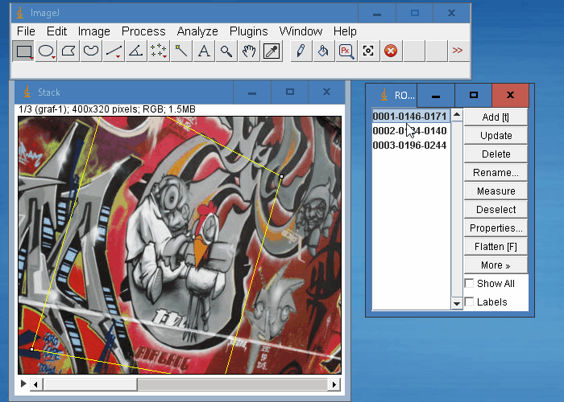

画像の特徴
画像の特徴については、「特徴量検出と特徴量記述」の「特徴の理解」に概要があります。
・・・基本的にコーナーは画像中の良い特徴とみなせるわけです(コーナーだけではなく，blobも良い特徴とみなせることもあります)．・・・画像中の小領域を見て，その周囲の領域で微小な移動を加えた時に最大の分散を示す領域を見つければ良いと言えます．以降のチュートリアルでこの直観的な説明をコンピュータ言語に置き換えていきます．これらの画像の特徴を見つけることを Feature Detection(特徴検出) と言います．・・・一度画像中の特徴を見つければ，他の画像中に写る同じ特徴も見つけられないといけません．何をすればいいのでしょうか?特徴の周囲の領域をとり，我々の言葉で”上の方は青い空，下の方は建物があり，建物にはガラスがあって...”といったように説明し，他の画像中に同じような領域があるか探すのです．この記述は Feature Description(特徴量記述) と呼ばれます．
OpenCVにおける特徴検出は，異なるアルゴリズムを容易にスイッチできる共通のインタフェースから扱えるようになっています。以下の3つのクラスがあります。
FeatureDetector- 画像のキーポイント（特徴点）を抽出するための抽象基底クラス
DescriptorExtractor- キーポイントに対するディスクリプタ（特徴量記述子）を計算するための抽象基底クラス
DescriptorMatcher- ディスクリプタ同士のマッチングのための抽象基底クラス
アルゴリズムには、SIFT、SURF、ORB、BRISK、AKAZEなどがあります。これらは複数の不変性を持ち、回転不変性しかないHarrisのコーナー検出より優れる場合があります。
本プラグインにおいては、特許的に問題ない ORB、BRISK、AKAZEを利用しています。
OCV_FeatDetが先頭に付くプラグインの簡単な説明
OpenCVにおける特徴検出を利用できるプラグインです。
OCV_FeatDet_1st_SetQuery- 画像のキーポイントとディスクリプタを計算します。
- 計算するだけでなく、メモリーに計算結果を保持し、
OCV_FeatDet_2nd_Matchで再利用できるようにします。
OCV_FeatDet_2nd_Match- 現在選択されている画像のディスクリプタを計算し、メモリーに保持されたディスクリプタと比較します。
enable_detect_queryをONにすると、RANSACを使ったfindHomography()を実行し、元画像（メモリーに保持されたディスクリプタ）と現在選択されている画像との間の透視変換を求め、対象画像における元画像と一致する領域を計算します。RANSAC_Reproj_Thresholdは、RANSACのための閾値です。- クロスチェックの処理を行っています。
サンプル
サンプルマクロを用意しました。以下の手順で試してください。
- こちらからzipファイルをダウンロードしてください。
- 全て展開します。
FeatureDetection_Macro_1.txtとgraf-0.jpgとgraf-1.jpgを、「File -> Open」で開きます。OCV__LoadLibraryを実行します。FeatureDetection_Macro_1.txtを、「Macros -> Run Macro」で実行してください。
- いったんファイルを閉じます。
FeatureDetection_Macro_2.txt、graf-0.jpg、graf-1.jpg、graf-2.jpgとgraf-3.jpgを、「File -> Open」で開きます。FeatureDetection_Macro_2.txtを、「Macros -> Run Macro」で実行してください。

デモ動画

デモ動画がこちらにあります。興味があればみてみてください。